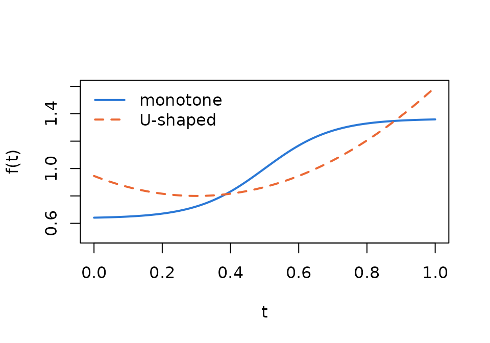
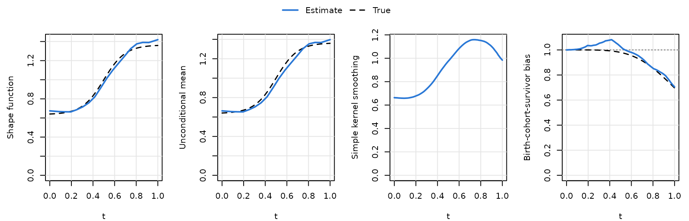
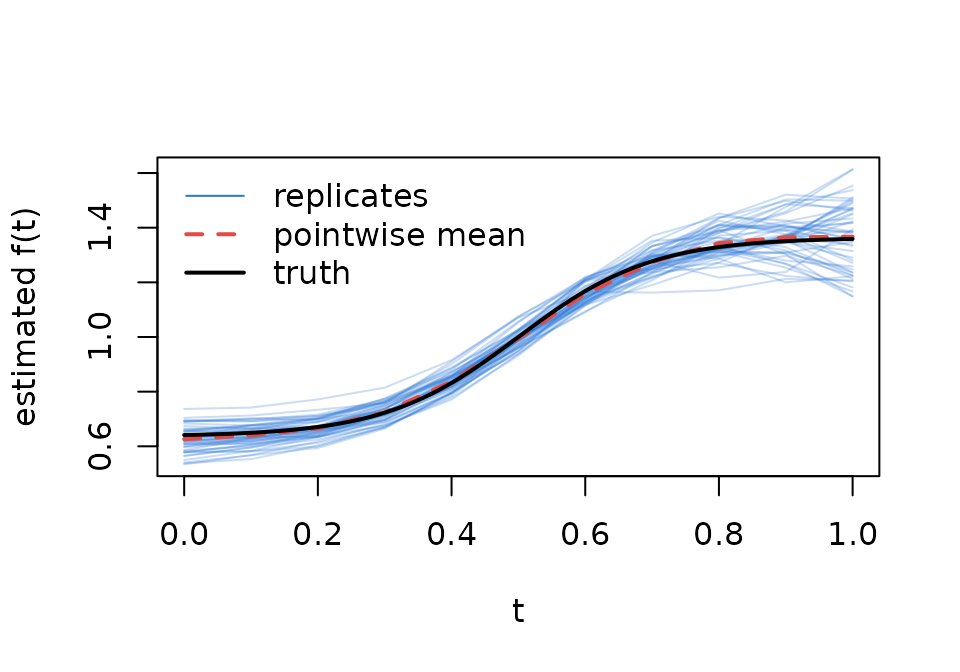
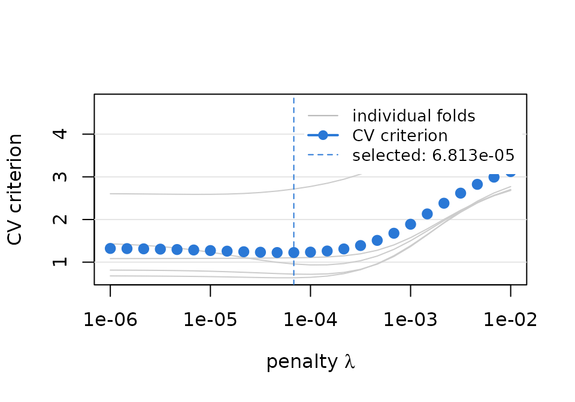
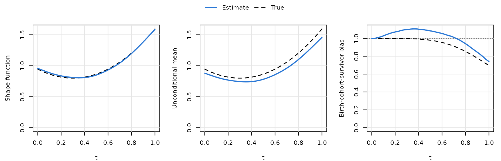
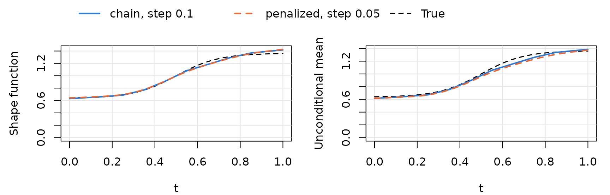
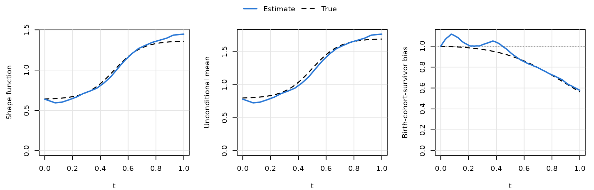

Simulation designs, unequal visit spacing and tuning
Source:vignettes/simulation.Rmd
simulation.RmdThis vignette reproduces, on a small scale, the simulation designs of
Section 6 of Hu, Wu, Zhao and Sun, and shows how TrajChain
handles unequally and widely spaced visits. See
vignette("TrajChain") for an introduction to the model and
the estimands.
The simulation designs
simulate_cohort() generates data on the unit age scale
[0, 1]. In the underlying population
the latent variable Z^0 is log-normal
with mean 1 and variance 0.25, the age at death given Z^0 = z is Weibull with shape 4.7 and scale
0.85 z^{-1/4.7} (so that individuals
with larger Z^0 die earlier), and the
marker is Y^0(t) = Z^0 f(t) e_t with
log-normal noise of mean 1 and variance 0.05. Two shape functions are
available:
curve(shape_monotone(x), 0, 1, ylim = c(0.5, 1.6), lwd = 2, col = "#2a78d6",
xlab = "t", ylab = "f(t)")
curve(shape_ushape(x), 0, 1, add = TRUE, lwd = 2, lty = 2, col = "#eb6834")
legend("topleft", c("monotone", "U-shaped"), lty = 1:2, lwd = 2,
col = c("#2a78d6", "#eb6834"), bty = "n")
Entry ages follow either random truncation, A^0 \sim U(-0.3, 1.9) independent of Z^0 (no birth-cohort effect), or informative truncation, where A^0 + 0.3 given Z^0 = z is Weibull with shape 3.2 and scale 1.2 z^{-1/3.2} (a birth-cohort effect). Only individuals alive at entry are enrolled (about half of the population). Each subject has a baseline visit and up to five follow-up visits, either equally spaced with gap 1/\lfloor 6 n^{0.16}\rfloor or unequally spaced with gaps (0.10, 0.10, 0.12, 0.10, 0.12); follow-up stops at death or dropout.
sim <- simulate_cohort(n = 1000, shape = "monotone", seed = 1)
sim
#> <TrajChain simulated cohort>
#> n = 1000 subjects enrolled (50.8% of the 10000 simulated individuals were alive at entry)
#> truncation: random; visits: 0.05556, equally spaced (5 follow-up visits)
#> mean number of observed measurements per subject: 2.91
#> pass Y, entry_age and visit_gaps to trajchain() with tau0 = 0 and tau1 = 1sim_truth() computes the true curves by numerical
integration. Under random truncation, \mu_{Z^0}(t) = E(Z^0 \mid T^0 \ge t) is the
pure survivor bias and \mu_{Z^0}(0) =
1:
sim_truth(c(0, 0.25, 0.5, 0.75, 1))
#> t shape mu bias mean
#> 1 0.00 0.6412312 1.0000000 1.0000000 0.6412312
#> 2 0.25 0.6915332 0.9992067 0.9992067 0.6915332
#> 3 0.50 1.0000000 0.9800188 0.9800188 1.0000000
#> 4 0.75 1.3084668 0.8857202 0.8857202 1.3084668
#> 5 1.00 1.3587688 0.6962223 0.6962223 1.3587688Equally spaced visits
There is no birth-cohort effect and dropout is unrelated to the latent variable, so assumption (A2’) holds and the pooled estimator of \mu_{Z^0}(t) (equation 6) can be used, as in the paper.
fit <- trajchain(sim$Y, sim$entry_age, sim$visit_gaps, tau0 = 0, tau1 = 1,
mu_method = "pooled")
plot(fit, truth = sim_truth(fit$curves$t), xlab = "t")
A small Monte Carlo study
The following loop repeats the analysis for 50 data sets and summarizes the pointwise bias and standard deviation of \hat f at t = 0, 0.1, \dots, 1, as in the supplementary tables of the paper (which use 1000 replicates).
R <- 50
ages <- seq(0, 1, by = 0.1)
est <- t(vapply(seq_len(R), function(r) {
s <- simulate_cohort(n = 1000, shape = "monotone", seed = r)
f <- trajchain(s$Y, s$entry_age, s$visit_gaps, tau0 = 0, tau1 = 1,
mu_method = "pooled", n_grid = 101)
predict(f, ages, type = "shape")
}, numeric(length(ages))))
round(rbind(bias = colMeans(est) - shape_monotone(ages),
sd = apply(est, 2, sd)), 3)
#> [,1] [,2] [,3] [,4] [,5] [,6] [,7] [,8] [,9] [,10] [,11]
#> bias -0.015 -0.010 -0.005 0.002 0.005 -0.005 -0.010 -0.003 0.014 0.014 0.008
#> sd 0.047 0.041 0.036 0.033 0.034 0.035 0.035 0.042 0.059 0.077 0.125
matplot(ages, t(est), type = "l", lty = 1, col = grDevices::adjustcolor("#2a78d6", 0.25),
xlab = "t", ylab = "estimated f(t)")
lines(ages, colMeans(est), lwd = 2, lty = 2, col = "#e34948")
curve(shape_monotone(x), 0, 1, add = TRUE, lwd = 2)
legend("topleft", c("replicates", "pointwise mean", "truth"), bty = "n",
col = c("#2a78d6", "#e34948", "black"), lty = c(1, 2, 1), lwd = c(1, 2, 2))
Unequally spaced visits
With gaps (5, 5, 6, 5, 6) \times
0.02, ratios are directly estimable only for ages 0.10 or 0.12
apart. trajchain() takes the greatest common divisor of the
gaps, 0.02, as the grid step (m = 50), estimates every ratio \hat r(u_j, u_{j'}) with u_j - u_{j'} \in \{0.10, 0.12\}, and
combines them by penalized weighted least squares (Section 5 of the
paper). Ratios based on fewer than c^* =
0.6\,n h observations receive zero weight.
The penalty \lambda is chosen by five-fold cross-validation over the grid used in the paper (25 values from 10^{-6} to 10^{-2}):
sim3 <- simulate_cohort(n = 1000, shape = "ushape", visit_gaps = "unequal", seed = 3)
cvl <- cv_lambda(sim3$Y, sim3$entry_age, sim3$visit_gaps, tau0 = 0, tau1 = 1)
cvl$lambda
#> [1] 6.812921e-05
plot(cvl)
fit3 <- trajchain(sim3$Y, sim3$entry_age, sim3$visit_gaps, tau0 = 0, tau1 = 1,
lambda = cvl, mu_method = "pooled")
fit3
#> <TrajChain fit>
#> Shape estimator : penalized ratio matching (Section 5), lambda = 6.81e-05, constraint = "anchor"
#> Mean estimator : all observed visits (equation 6)
#> Subjects : 1000, with 2823 measurements (2.82 per subject)
#> Visit gaps : 0.1, 0.1, 0.12, 0.1, 0.12 (5 follow-up visits)
#> Age interval : [0, 1], m = 50 grid points (step 0.02)
#> Bandwidths : h = 0.1133 (ratio), h' = 0.2106 (mean)
#>
#> age shape mean bias nw
#> 0.0 0.9571 0.8797 1.0000 0.8797
#> 0.2 0.8361 0.7686 1.0725 0.8243
#> 0.4 0.8098 0.7444 1.1034 0.8214
#> 0.6 0.9320 0.8567 1.0551 0.9039
#> 0.8 1.1980 1.1012 0.9408 1.0360
#> 1.0 1.5865 1.4583 0.7407 1.0802
head(fit3$pairs)
#> age_from age_to gap ratio n kept weight
#> 1 0.01 0.11 0.1 0.9234061 345 TRUE 0.02399666
#> 2 0.03 0.13 0.1 0.9231099 332 TRUE 0.02309244
#> 3 0.05 0.15 0.1 0.9273819 337 TRUE 0.02344022
#> 4 0.07 0.17 0.1 0.9327579 344 TRUE 0.02392711
#> 5 0.09 0.19 0.1 0.9396088 352 TRUE 0.02448355
#> 6 0.11 0.21 0.1 0.9474545 353 TRUE 0.02455311
plot(fit3, which = c("shape", "mean", "bias"),
truth = sim_truth(fit3$curves$t, shape = "ushape"), xlab = "t")
trajchain(..., lambda = "cv") (the default for the
penalized estimator) runs the same cross-validation internally.
The penalized problem is normalized so that the estimate integrates
to one. By default (constraint = "anchor") it is solved in
closed form with the first grid value fixed and then rescaled, which is
the implementation used for the results in the paper.
constraint = "integral" instead solves the quadratic
program with the integral and non-negativity constraints:
Widely spaced visits
When visits are far apart, a grid with the visit gap as its step is
coarse. Section 5 of the paper refines the grid to step v/q; the ratios then define q interleaved chains, which the penalty links
together. In trajchain() this only requires
grid_step:
simw <- simulate_cohort(n = 1000, visit_gaps = rep(0.1, 5), seed = 4)
fit_coarse <- trajchain(simw$Y, simw$entry_age, simw$visit_gaps, tau0 = 0, tau1 = 1,
mu_method = "pooled")
fit_fine <- trajchain(simw$Y, simw$entry_age, simw$visit_gaps, tau0 = 0, tau1 = 1,
grid_step = 0.05, mu_method = "pooled")
c(coarse = fit_coarse$design$m, fine = fit_fine$design$m)
#> coarse fine
#> 10 20
plot_trajectories(list("chain, step 0.1" = fit_coarse, "penalized, step 0.05" = fit_fine),
which = c("shape", "mean"), truth = sim_truth(seq(0, 1, by = 0.01)),
xlab = "t")
Informative truncation
With informative truncation, the entry age depends on Z^0 and \mu_{Z^0}(t) = E(Z^0 \mid A^0 = t, T^0 \ge t) combines survivor and birth-cohort selection. The baseline estimator (equation 5), the default, remains valid:
simi <- simulate_cohort(n = 2000, truncation = "informative", seed = 5)
fiti <- trajchain(simi$Y, simi$entry_age, simi$visit_gaps, tau0 = 0, tau1 = 1)
plot(fiti, which = c("shape", "mean", "bias"),
truth = sim_truth(fiti$curves$t, truncation = "informative"), xlab = "t")
Running the full simulation study
The paper uses 1000 replicates for each design and sample size. The code below (not run here) parallelizes over replicates and stores the curves on the dense grid; since every replicate re-creates its data from its seed, no objects need to be exported to the workers.
library(parallel)
one_replicate <- function(seed, n) {
s <- simulate_cohort(n = n, shape = "monotone", seed = seed)
f <- trajchain(s$Y, s$entry_age, s$visit_gaps, tau0 = 0, tau1 = 1, mu_method = "pooled")
f$curves[, c("shape", "mean_pooled", "bias_pooled")]
}
res <- mclapply(1:1000, one_replicate, n = 1000, mc.cores = detectCores() - 1)
shape_mat <- t(vapply(res, function(r) r$shape, numeric(801)))